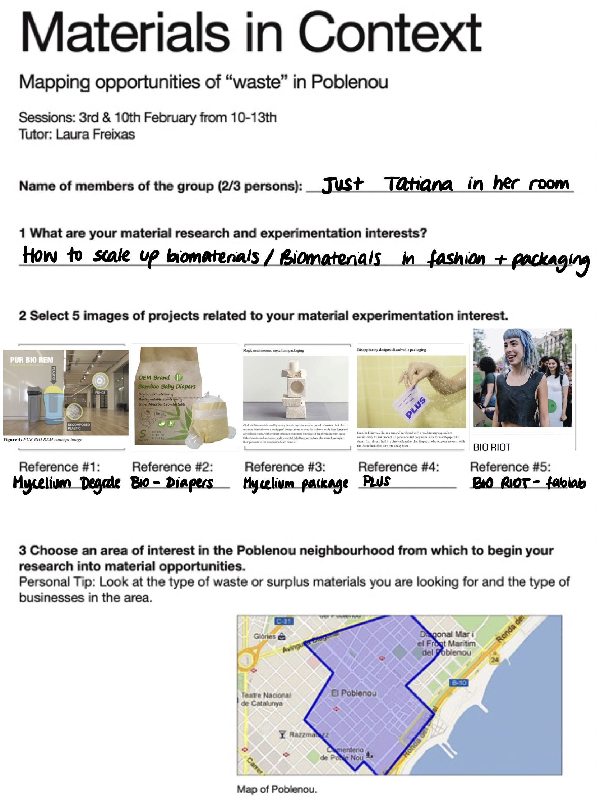
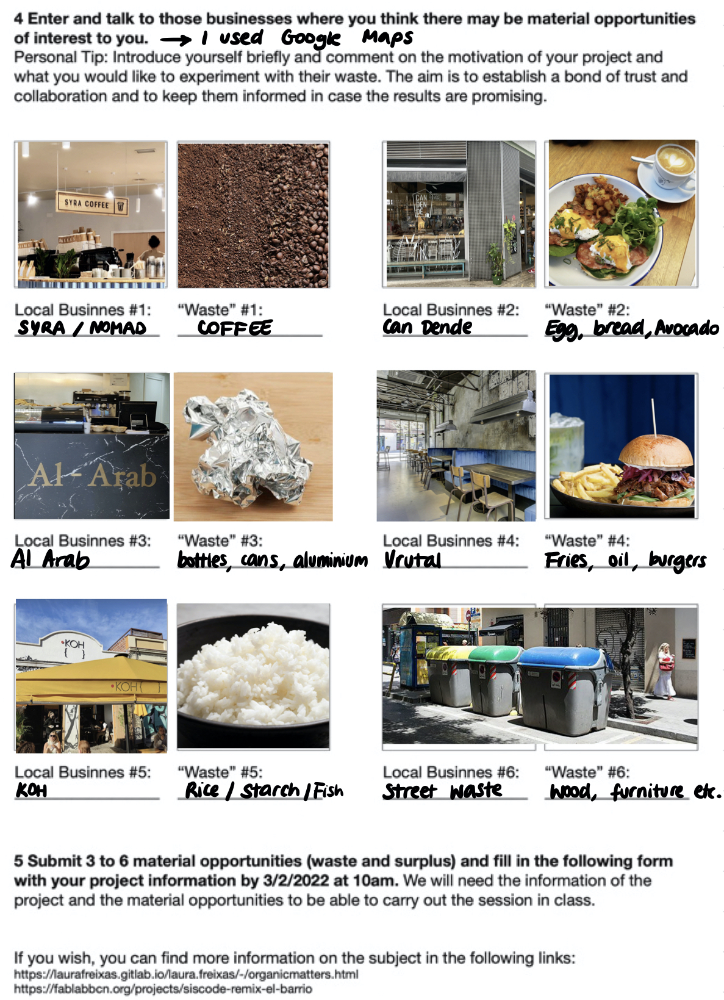
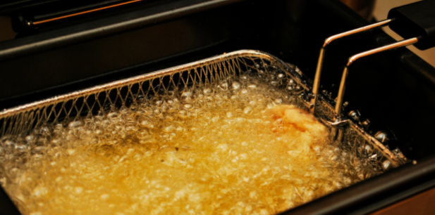

It was hard for me to complete this exercise in the way which Lara planned us to, because I was still in quarantine in my room, unable to visit the restaurant & shops in person. Therefore, I used Google Maps and tried to located businesses I already knew, but also tried to find something new. I did not only select biomaterials
I am not sure what materials I would like to experiment with specifically, but I do know that I would like to find practical projects that could also be scalable.
Here is the exercise sheet that Laura asked us to fill in:


On Thursday, I joined Paula & Marina’s group through a Whatsapp call whilst they were in class. We shared our Poblenou waste maps and exchanged ideas and resources. The Horchateria and Burger restaurants ended up interesting us the most, so we decided to explore the two main materials those businesses could offer: Chufa (tigernut) and Oil.

Oil:
liquid at room temperature, high boiling point, messy, greasy, water repellant